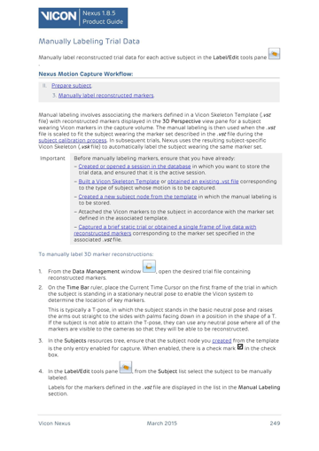
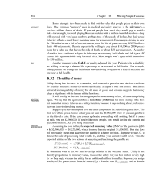
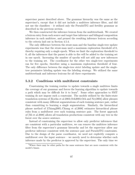
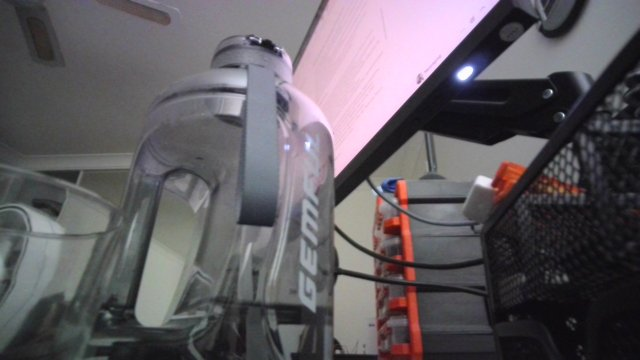
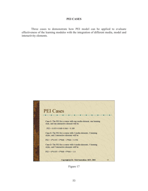

Everything to know about ColPali-style retrieval: why embedding the page image beats parsing it, what late interaction costs in storage, the mid-2026 landscape, and runnable code that puts OCR+BM25, CLIP and two late-interaction models on the same corpus.
Author
Benedict Thekkel
1. What is Visual Document Retrieval?
Visual document retrieval is a text query in, a ranked list of document pages out, where the pages are matched as images rather than as extracted text.
That last clause is the whole idea. The traditional way to make a PDF searchable is a pipeline: OCR the page, detect the layout, reconstruct the reading order, chunk the text, embed the chunks, index them. Five stages, each with its own failure mode, and every stage discards something - a chart becomes a caption, a table becomes a mangled string, a diagram becomes nothing at all.
ColPali (Faysse et al., 2024) asked what happens if you delete the pipeline: feed the page image straight into a vision-language model, keep the per-patch embeddings, and match them against the query’s per-token embeddings with late interaction. It was both simpler and substantially better, and it created this task category.
Input. A text query, and a corpus of page images (rendered PDF pages, scans, screenshots, slides).
Output. The top-k pages, scored. What happens next is normally document QA (Multimodal/05) on the retrieved pages - visual retrieval is the first half of a multimodal RAG system, not a product on its own.
Neighbouring task
Difference
Typical tools
Document QA (Multimodal/05)
You already know which page; now answer about it
Donut, LayoutLM, Qwen3-VL
Text retrieval / RAG (NLP/07, NLP/10)
Corpus is text; the parsing problem is assumed solved
BGE, E5, Qwen3-Embedding
Image feature extraction (Computer_Vision/16)
Image-to-image similarity, no text query
DINOv2, SigLIP
Zero-shot classification (Computer_Vision/11)
Fixed labels, single-vector match
CLIP, SigLIP
Text ranking (NLP/11)
Reranks an existing candidate list, usually cross-encoder
BGE-reranker
Why not just use CLIP? CLIP squeezes an entire page into one vector, and a page contains dozens of independent facts. A query about a footnote has to compete with everything else on the page for room in that single embedding. Late interaction keeps one vector per patch and lets the query’s tokens each find their own best-matching patch - which is why section 10 beats section 9 by a wide margin, and why it costs 100x the storage.
2. Real-World Use Cases
Use case
Domain
Consumes / produces
Dominant constraint
Enterprise document search
Any large organisation
Question + PDF corpus -> relevant pages
Index size and refresh cost; permissions; recall on charts and tables
Financial research and filings
Finance
“FY24 segment revenue” + 10-Ks -> the exact page
Tables and figures; auditability of the citation
Legal discovery and contract search
Legal
Query + case documents -> pages with citations
Recall above all; defensibility of the process
Technical support and manuals
Manufacturing, consumer electronics
“how do I reset the pump” + manuals -> the diagram page
Diagrams carry the answer; multilingual manuals
Scientific literature search
Research
“results for method X on dataset Y” -> the figure or table
Formulas and plots that OCR mangles
Pharma and regulatory dossiers
Life sciences
Query + submission binder -> the page
Compliance, versioning, complete recall
Slide-deck and knowledge search
Consulting, sales enablement
Query + deck archive -> the slide
Slides are almost entirely visual; OCR order is meaningless
Insurance policy and claim lookup
Insurance
Query + policy PDFs -> the clause
Long documents; exact clause retrieval
Public-records and archive search
Government, journalism
Query + scanned archives -> the page
Old scans, handwriting, no digital text at all
Multimodal RAG for assistants
Any
User question -> pages -> grounded answer
End-to-end latency; hallucination control via citation
What the leaderboard hides. Four realities.
Index size is the deployment blocker. A single-vector index over a million pages is a few gigabytes. The same corpus with ColPali’s ~1,030 vectors per page is hundreds of gigabytes before compression. Section 10 measures this exactly, and section 14 covers the standard mitigations (binary quantization, pooling, two-stage retrieval).
Latency is dominated by scoring, not encoding. Late interaction cannot use a plain dot-product index. Production deployments either use a specialised index (PLAID, MUVERA, Vespa’s tensor support, Qdrant multivectors) or do a cheap first-stage retrieval and re-score the top 100 with MaxSim.
Retrieval quality caps everything downstream. A perfect VLM cannot answer from a page it never received. In a multimodal RAG stack, recall@k at the retrieval stage is the ceiling on end-to-end accuracy, which is why this task is worth its own notebook.
Real corpora are heterogeneous. Scanned faxes next to born-digital slides next to spreadsheets. The pipeline approach degrades unevenly across those; the visual approach degrades more gracefully because it never assumed a text layer existed.
3. How Modern Visual Document Retrieval Works
OCR plus lexical search (the 40-year baseline). Extract text, index with BM25. Exact-term matching is genuinely strong, it needs no GPU, and it explains itself. It also cannot match “revenue growth” to a bar chart with no words, and it inherits every OCR error. Section 8 runs it as the control.
OCR plus dense text embeddings (2019-2023). Replace BM25 with a text bi-encoder (DPR, then E5/BGE/GTE). Semantic matching improves, and the parsing pipeline’s losses remain exactly where they were. Hybrid BM25 + dense is still the enterprise default in 2026 for text-heavy corpora.
Single-vector image-text matching (CLIP, 2021; SigLIP, 2023). Embed the page image and the query into one shared space. Zero parsing, but one vector per page is a severe bottleneck for a document with dozens of facts, and CLIP’s training data (web photos with alt-text) is nothing like a document page. Section 9 shows how badly this does.
Late interaction over text (ColBERT, 2020). The idea being borrowed: keep one vector per token for both query and document, and score with MaxSim - for each query token, take its best match in the document, then sum:
Far more expressive than a single dot product, and still cheap enough to index because the interaction happens at scoring time, not through a cross-encoder.
ColPali: late interaction over page patches (2024). Take a document-capable VLM (PaliGemma-3B), project its per-patch hidden states to 128 dimensions, and MaxSim them against the query’s per-token embeddings. A page becomes ~1,030 vectors, one per image patch. No OCR, no layout detection, no chunking - and on the ViDoRe benchmark it beat the best pipeline systems by a wide margin, especially on figures, tables and infographics. ColQwen2 (2024-25) swapped the backbone for Qwen2-VL with dynamic resolution, which handles varied page sizes better.
Efficiency work (2025-2026). The storage cost drove a wave of follow-ups: token pooling (cluster similar patch vectors, 3x fewer with almost no quality loss), binary quantization (32x smaller, ~1-3 point cost), fixed-dimensional encodings (MUVERA) that let you use a normal ANN index, and small models like ColSmol (256M/500M) for edge deployment. Native multivector support landed in Qdrant, Vespa, Weaviate and Milvus.
Where it is going. Multilingual and multi-domain training sets (ViDoRe v2/v3 exposed how much v1 was saturated), unified embedding models that handle text, images and pages in one space, and hybrid indexes that combine a cheap first stage with MaxSim reranking.
Mid-2026 state. Late interaction over page images is the accepted state of the art for document retrieval where the pages are visual. For plain text-heavy corpora, a good text embedder plus BM25 remains competitive at a fraction of the index size - and the honest engineering answer is to route by document type.
4. Evaluation Metrics
Retrieval metrics, applied to pages. In the ViDoRe setting each query has exactly one relevant page, which simplifies everything.
nDCG@k - the headline metric on ViDoRe. Discounted cumulative gain normalised by the ideal ordering:
With a single relevant document, this collapses to \(1 / \log_2(\text{rank} + 1)\) if the gold page is in the top k, else 0. So rank 1 scores 1.0, rank 2 scores 0.63, rank 5 scores 0.39.
Recall@k - is the gold page anywhere in the top k? This is the metric that matters for RAG, because it is the ceiling on what the downstream reader can possibly answer. If your generator gets k=5 pages, recall@5 is your real budget.
MRR - mean reciprocal rank, \(1/\text{rank}\). Sensitive to the exact position, useful when the user sees one result.
Index cost. Report vectors per page, bytes per page and total index size at your corpus scale. A model that wins nDCG@5 by two points and needs 100x the storage may still be the wrong choice, and this is the number most papers bury.
Latency, split into encoding (per page, offline) and query time (encode the query + score the corpus). They scale differently and are budgeted differently.
The cell below implements the three ranking metrics.
import mathimport numpy as npdef ndcg_at_k(rankings, k=5):"nDCG@k with exactly one relevant document per query (the ViDoRe setting).\n\n `rankings[i]` is the 0-based rank at which query i's gold page appeared, or -1 if it\n was not retrieved at all. With one relevant doc the ideal DCG is 1.0, so this is just\n 1 / log2(rank + 2) when the gold page made the cut.\n " scores = [1.0/ math.log2(r +2) if0<= r < k else0.0for r in rankings]returnfloat(np.mean(scores))def recall_at_k(rankings, k=5):"Fraction of queries whose gold page is anywhere in the top k. The RAG ceiling."returnfloat(np.mean([1.0if0<= r < k else0.0for r in rankings]))def mrr(rankings):"Mean reciprocal rank. Sensitive to the exact position, not just membership."returnfloat(np.mean([1.0/ (r +1) if r >=0else0.0for r in rankings]))def ranks_from_scores(score_matrix, golds):"Score matrix (queries x pages) + gold page index per query -> 0-based rank of the gold page." order = np.argsort(-np.asarray(score_matrix), axis=1)return [int(np.where(row == g)[0][0]) for row, g inzip(order, golds)]demo = [0, 0, 1, 4, 9, -1] # gold page ranks for six imaginary queriesprint(f"ranks {demo}")for k in (1, 5, 10):print(f"nDCG@{k:<2d}{ndcg_at_k(demo, k):.3f} recall@{k:<2d}{recall_at_k(demo, k):.3f}")print(f"MRR {mrr(demo):.3f}")print("\nRank 0 scores 1.000, rank 1 scores 0.631, rank 4 scores 0.431: nDCG punishes\n""position hard, while recall@5 only asks whether the page made the cut at all.")
ranks [0, 0, 1, 4, 9, -1]
nDCG@1 0.333 recall@1 0.333
nDCG@5 0.503 recall@5 0.667
nDCG@10 0.551 recall@10 0.833
MRR 0.467
Rank 0 scores 1.000, rank 1 scores 0.631, rank 4 scores 0.431: nDCG punishes
position hard, while recall@5 only asks whether the page made the cut at all.
This notebook builds a small corpus from vidore/syntheticDocQA_artificial_intelligence_test: each row carries one page image and one query whose answer is on that page, so the gold label is free. A few dozen pages is a smoke test - retrieval gets monotonically harder as the corpus grows, and published ViDoRe numbers are over thousands of pages.
6. The Model Landscape (mid-2026)
Leaderboard: ViDoRe (nDCG@5 across the benchmark suite), plus MTEB for the text-retrieval baselines these are compared against.
Model
Params
License
Representation
Vectors / page
Best for
BM25 over OCR text
n/a
n/a
sparse lexical
n/a (postings)
exact terms; no GPU; the honest baseline
Text embedder over OCR (BGE-M3, E5, Qwen3-Embedding)
Who wins what. On nDCG@5 over visual corpora, late-interaction models win decisively - the gap over a single-vector image embedding is enormous, and over an OCR pipeline it is large on figure- and table-heavy pages. On index size, single-vector models win by two orders of magnitude. On cost per query at scale, BM25 is nearly free. On edge deployment, ColSmol is the only late-interaction option that fits.
The engineering answer in 2026 is usually hybrid: BM25 or a cheap dense retriever for the first 100 candidates, MaxSim rerank on those, and route scanned/visual documents to the visual path while born-digital text goes to the text path.
What fits this 12 GB box. ColQwen2-v1.0 (4.4 GB download, ~5 GB VRAM) and ColPali-v1.3 (5.9 GB, ~7 GB) both run, one at a time, and encode pages at roughly one per second. The OCR baseline uses GOT-OCR 2.0 (1.1 GB) and CLIP (0.6 GB) is the single-vector control. The binding constraint is not VRAM but encoding time and index memory as the corpus grows - which is exactly the production constraint too.
7. Setup
Every model loads through Hugging Face transformers - ColPali and ColQwen2 are both natively supported (ColPaliForRetrieval, ColQwen2ForRetrieval), so no colpali-engine vendor package is needed. Package roles:
BM25 is implemented inline in about 25 lines rather than pulling in a dependency, because seeing the formula is the point of having a baseline.
One API note. The Col* processors have three methods that do all the work: process_images(images), process_queries(queries) and score_retrieval(query_embeddings, page_embeddings). The last one is MaxSim, batched. Embeddings come back padded per batch, so keep batches uniform or trim the padding before storing - a subtle source of wrong scores if you concatenate batches naively.
All downloads land in DL_tasks/datasets/, which is gitignored.
# Everything runs through Hugging Face transformers - no colpali-engine, no vendor packages.# %pip install -q torch transformers accelerate datasets pillow pandas pyecharts
import ctypesimport ctypes.utilimport gcimport timefrom pathlib import Pathimport numpy as npimport torchfrom dotenv import find_dotenv, load_dotenv# Knowledge/.env sets HF_TOKEN - authenticated HF Hub requests get higher rate limitsload_dotenv(find_dotenv(usecwd=True))device ="cuda:0"if torch.cuda.is_available() else"cpu"dtype = torch.float16 if device !="cpu"else torch.float32if device !="cpu":print(torch.cuda.get_device_name(0))print("device:", device, "| dtype:", dtype)def vram(tag=""):"Report current GPU memory (allocated / reserved). No-op on CPU."if torch.cuda.is_available(): alloc = torch.cuda.memory_allocated() /1e9 reserved = torch.cuda.memory_reserved() /1e9print(f"VRAM {tag:22s}{alloc:5.2f} GB allocated / {reserved:5.2f} GB reserved")def free_memory():"Collect garbage and hand freed VRAM back to the CUDA allocator.\n\n Call right after `del`-ing a model you are done with: `del model; free_memory()`.\n `del` drops the Python reference; this reclaims the RAM and releases the VRAM.\n " gc.collect()if torch.cuda.is_available(): torch.cuda.empty_cache() torch.cuda.ipc_collect()# glibc keeps freed CPU allocations in its arenas instead of returning them to the# OS, so RSS compounds across sections - and a multivector index is large CPU RAM.# malloc_trim(0) hands the freed arenas back. See# dl-visualization-and-memory.instructions.md - not optional on a 12 GB box.try: ctypes.CDLL(ctypes.util.find_library("c") or"libc.so.6").malloc_trim(0)exceptException:pass# All downloads go to DL_tasks/datasets/ (gitignored)DATA_DIR = Path("../../datasets")DATA_DIR.mkdir(exist_ok=True)HF_CACHE =str(DATA_DIR /"hf_cache")
from datasets import load_datasetfrom IPython.display import display# Corpus: PDF pages from the AI-domain ViDoRe split. Every row carries one page and one# query whose answer is on that page, so the gold label comes free.ds = load_dataset("vidore/syntheticDocQA_artificial_intelligence_test", split="test", cache_dir=HF_CACHE)N_PAGES =40# corpus size. Retrieval gets monotonically harder as this grows.N_QUERIES =20# queries scored against the whole corpuspages, queries, golds = [], [], []for i, row inenumerate(ds.select(range(N_PAGES))): pages.append(row["image"].convert("RGB"))iflen(queries) < N_QUERIES and row["query"]: queries.append(row["query"]) golds.append(i) # this query's answer is on page iprint(f"corpus: {len(pages)} pages at {pages[0].size}")print(f"queries: {len(queries)}")for q, g inlist(zip(queries, golds))[:3]:print(f"\nQ: {q}\n gold page: {g}")display(pages[golds[0]].resize((360, int(360* pages[golds[0]].height / pages[golds[0]].width))))
corpus: 40 pages at (1654, 2339)
queries: 20
Q: What is the process for manually labeling trial data in Vicon Nexus?
gold page: 0
Q: What is the micromort, and how is it used in safety analysis?
gold page: 1
Q: What is the difference between the straw-man and baseline single-tree update experiments?
gold page: 2

8. The baseline: OCR then BM25
The pipeline ColPali set out to delete, run honestly so the comparison means something.
Stage 1: OCR. GOT-OCR 2.0 (0.58B) reads each page to markdown. This is a good OCR model - better than Tesseract on layout - so this baseline is not a straw man. It is also the expensive part: one forward pass per page, exactly like the visual retrievers, so the “OCR is cheap” intuition is wrong at this quality level.
Stage 2: BM25. The classic sparse ranking function, implemented inline:
with \(k_1 = 1.5\), \(b = 0.75\). Term frequency saturates (the second mention of a word matters less than the first) and long documents are penalised.
Where it wins: exact rare terms, names, part numbers, acronyms. Where it fails: paraphrase (“revenue growth” vs “sales increased”), and anything whose content is a figure with no words.
from transformers import AutoModelForImageTextToText, AutoProcessorgot_id ="stepfun-ai/GOT-OCR-2.0-hf"got_proc = AutoProcessor.from_pretrained(got_id, use_fast=True, cache_dir=HF_CACHE)got = AutoModelForImageTextToText.from_pretrained( got_id, dtype=dtype, device_map=device, cache_dir=HF_CACHE).eval()vram("got-ocr loaded")def transcribe(image, max_new_tokens=1024):"Page image -> markdown text. This is the whole 'parse the document' stage." inputs = got_proc(image, return_tensors="pt", format=True).to(got.device, dtype)with torch.inference_mode(): ids = got.generate(**inputs, do_sample=False, max_new_tokens=max_new_tokens, tokenizer=got_proc.tokenizer, stop_strings="<|im_end|>")return got_proc.decode(ids[0, inputs["input_ids"].shape[1]:], skip_special_tokens=True)t0 = time.perf_counter()corpus_text = [transcribe(p) for p in pages]ocr_seconds = time.perf_counter() - t0print(f"OCR'd {len(pages)} pages in {ocr_seconds:.0f}s ({ocr_seconds /len(pages):.2f}s per page)")print(f"mean transcript length: {np.mean([len(t) for t in corpus_text]):.0f} chars")print(f"\npage {golds[0]} transcript:\n{corpus_text[golds[0]][:350]}...")del got, got_procfree_memory()vram("after got-ocr")
[transformers] The `use_fast` parameter is deprecated and will be removed in a future version. Use `backend="torchvision"` instead of `use_fast=True`, or `backend="pil"` instead of `use_fast=False`.
[transformers] Ignoring clean_up_tokenization_spaces=True for BPE tokenizer TokenizersBackend. The clean_up_tokenization post-processing step is designed for WordPiece tokenizers and is destructive for BPE (it strips spaces before punctuation). Set clean_up_tokenization_spaces=False to suppress this warning, or set clean_up_tokenization_spaces_for_bpe_even_though_it_will_corrupt_output=True to force cleanup anyway.
OCR'd 40 pages in 198s (4.95s per page)
mean transcript length: 2337 chars
page 0 transcript:
\title{
Manually Labeling Trial Data
}
\author{
Manually label reconstructed trial data for each active subject in the Label/Edit tools pane
}
Nexus Motion Capture Workflow:
II. Prepare subject.
3. Manually label reconstructed markers
Manual labeling involves associating the markers defined in a Vicon Skeleton Template (.vst file) with reconstructe...
VRAM after got-ocr 0.01 GB allocated / 0.02 GB reserved
import refrom collections import Counterclass BM25:"Okapi BM25. 25 lines, no dependency, and the baseline every retriever must beat."def__init__(self, documents, k1=1.5, b=0.75):self.k1, self.b = k1, bself.docs = [self._tokenise(d) for d in documents]self.freqs = [Counter(d) for d inself.docs]self.lengths = np.array([len(d) for d inself.docs], dtype=np.float32)self.avgdl =float(self.lengths.mean()) or1.0 n_docs =len(self.docs) df = Counter()for d inself.docs: df.update(set(d))# Robertson IDF with the +0.5 smoothing that keeps common terms non-negative.self.idf = {t: math.log(1+ (n_docs - c +0.5) / (c +0.5)) for t, c in df.items()}@staticmethoddef _tokenise(text):return re.findall(r"[a-z0-9]+", text.lower())def score(self, query):"BM25 score of the query against every document. Returns an array of length n_docs." scores = np.zeros(len(self.docs), dtype=np.float32)for term inself._tokenise(query): idf =self.idf.get(term)if idf isNone:continue tf = np.array([f[term] for f inself.freqs], dtype=np.float32) denom = tf +self.k1 * (1-self.b +self.b *self.lengths /self.avgdl) scores += idf * (tf * (self.k1 +1)) / np.maximum(denom, 1e-9)return scorest0 = time.perf_counter()bm25 = BM25(corpus_text)bm25_scores = np.stack([bm25.score(q) for q in queries])bm25_query_seconds = (time.perf_counter() - t0) /len(queries)bm25_ranks = ranks_from_scores(bm25_scores, golds)print(f"BM25 over GOT-OCR text nDCG@5 {ndcg_at_k(bm25_ranks, 5):.3f} "f"recall@5 {recall_at_k(bm25_ranks, 5):.3f} MRR {mrr(bm25_ranks):.3f}")print(f"query time: {bm25_query_seconds *1000:.2f} ms (CPU, no index structure at all)")print(f"gold ranks: {bm25_ranks}")
BM25 over GOT-OCR text nDCG@5 0.922 recall@5 1.000 MRR 0.897
query time: 0.29 ms (CPU, no index structure at all)
gold ranks: [0, 0, 0, 0, 0, 0, 4, 0, 0, 0, 0, 0, 0, 0, 3, 0, 0, 1, 0, 0]
9. The single-vector control: CLIP on the page image
The other obvious thing to try, and the one that shows why late interaction exists.
CLIP embeds the whole page into one 512-dimensional vector and the query into another, then takes a cosine similarity. It is fast, it is tiny to index, and it needs no OCR. It is also, on documents, close to useless - for two independent reasons:
The bottleneck. A page contains dozens of independent facts. One vector cannot represent “this page mentions Vicon Nexus and discusses marker labelling and has a table of parameters” in a way that lets a query about any one of them match strongly.
The domain gap. CLIP was trained on web photos with alt-text. A dense page of 9 pt text is out of distribution; every document page looks roughly the same to it.
Watch the numbers, and note that the failure is not marginal. This is the control that makes ColPali’s design legible.
from transformers import CLIPModel, CLIPProcessorclip_id ="openai/clip-vit-base-patch32"clip_proc = CLIPProcessor.from_pretrained(clip_id, cache_dir=HF_CACHE)clip = CLIPModel.from_pretrained(clip_id, cache_dir=HF_CACHE).to(device).eval()vram("clip loaded")def clip_embed_images(images, batch_size=8):"One L2-normalised vector per page." out = []for i inrange(0, len(images), batch_size): inputs = clip_proc(images=images[i:i + batch_size], return_tensors="pt").to(device)with torch.inference_mode(): f = clip.get_image_features(**inputs).pooler_output out.append(torch.nn.functional.normalize(f.float(), dim=-1).cpu())return torch.cat(out)def clip_embed_texts(texts):"One L2-normalised vector per query. CLIP truncates at 77 tokens - relevant here." inputs = clip_proc(text=texts, return_tensors="pt", padding=True, truncation=True).to(device)with torch.inference_mode(): f = clip.get_text_features(**inputs).pooler_outputreturn torch.nn.functional.normalize(f.float(), dim=-1).cpu()t0 = time.perf_counter()page_vecs = clip_embed_images(pages)clip_encode_seconds = (time.perf_counter() - t0) /len(pages)query_vecs = clip_embed_texts(queries)clip_scores = (query_vecs @ page_vecs.T).numpy()clip_ranks = ranks_from_scores(clip_scores, golds)print(f"CLIP single-vector nDCG@5 {ndcg_at_k(clip_ranks, 5):.3f} "f"recall@5 {recall_at_k(clip_ranks, 5):.3f} MRR {mrr(clip_ranks):.3f}")print(f"index: {page_vecs.shape[1]} floats per page = "f"{page_vecs.shape[1] *4/1024:.1f} KB per page in fp32")print(f"encode: {clip_encode_seconds *1000:.0f} ms per page")print(f"gold ranks: {clip_ranks}")del clip, clip_procfree_memory()vram("after clip")
The main event. ColQwen2 v1.0 is Qwen2-VL-2B with a projection head that maps every visual patch’s hidden state to a 128-dimensional vector. A page becomes a matrix of shape (patches, 128) rather than a single vector; a query becomes (tokens, 128). Scoring is MaxSim:
Each query token independently finds the patch it matches best, and those best matches are summed. A query about a number in a table matches the patch containing that table cell, without competing against the rest of the page - which is precisely what the single vector in section 9 could not do.
Qwen2-VL’s dynamic resolution means the patch count varies with page size, which is a genuine advantage over ColPali’s fixed 1,024 patches for mixed corpora, and a small annoyance when you want fixed-size storage.
The cell below also computes the number that decides whether you can deploy this: bytes per page, and what that becomes at a million pages.
from transformers import ColQwen2ForRetrieval, ColQwen2Processorcolqwen_id ="vidore/colqwen2-v1.0-hf"cq_proc = ColQwen2Processor.from_pretrained(colqwen_id, cache_dir=HF_CACHE)cq = ColQwen2ForRetrieval.from_pretrained( colqwen_id, dtype=dtype, device_map=device, cache_dir=HF_CACHE).eval()vram("colqwen2 loaded")def col_embed_images(model, processor, images, batch_size=2):"One (patches, 128) matrix per page. Batches are padded, so keep them per-page." out = []for i inrange(0, len(images), batch_size): batch = processor.process_images(images[i:i + batch_size]).to(model.device)with torch.inference_mode(): emb = model(**batch).embeddings out.extend([e.float().cpu() for e in emb]) # keep per-page, padding and allreturn outdef col_embed_queries(model, processor, texts, batch_size=8):"One (tokens, 128) matrix per query." out = []for i inrange(0, len(texts), batch_size): batch = processor.process_queries(texts[i:i + batch_size]).to(model.device)with torch.inference_mode(): emb = model(**batch).embeddings out.extend([e.float().cpu() for e in emb])return outt0 = time.perf_counter()cq_pages = col_embed_images(cq, cq_proc, pages)cq_encode_seconds = (time.perf_counter() - t0) /len(pages)cq_queries = col_embed_queries(cq, cq_proc, queries)# score_retrieval IS MaxSim, batched and padded correctly.cq_scores = cq_proc.score_retrieval(cq_queries, cq_pages).numpy()cq_ranks = ranks_from_scores(cq_scores, golds)print(f"ColQwen2 late interaction nDCG@5 {ndcg_at_k(cq_ranks, 5):.3f} "f"recall@5 {recall_at_k(cq_ranks, 5):.3f} MRR {mrr(cq_ranks):.3f}")print(f"encode: {cq_encode_seconds:.2f}s per page")print(f"gold ranks: {cq_ranks}")
# The cost side of late interaction, in numbers rather than adjectives.n_vecs = [e.shape[0] for e in cq_pages]dim = cq_pages[0].shape[1]bytes_fp16 =float(np.mean(n_vecs)) * dim *2single_vector_bytes =512*4# the CLIP index from section 9print(f"vectors per page : {min(n_vecs)}-{max(n_vecs)} (mean {np.mean(n_vecs):.0f}), dim {dim}")print(f"bytes per page : {bytes_fp16 /1024:6.1f} KB in fp16 vs {single_vector_bytes /1024:.1f} KB "f"for a single 512-d vector ({bytes_fp16 / single_vector_bytes:.0f}x)")for corpus in (10_000, 1_000_000):print(f"index at {corpus:>9,} pages: {bytes_fp16 * corpus /1e9:8.1f} GB late-interaction "f"vs {single_vector_bytes * corpus /1e9:6.2f} GB single-vector")print("\nThis is the real deployment trade, and the reason for the 2025 efficiency work:\n""binary quantization (32x smaller), token pooling (~3x fewer vectors), and\n""two-stage retrieval that only MaxSims the top 100 candidates.")# What MaxSim buys, made visible: how much of a query's score comes from its best patch.q_idx =0q_emb, p_emb = cq_queries[q_idx], cq_pages[golds[q_idx]]sim = (q_emb @ p_emb.T) # (query tokens, page patches)per_token_best = sim.max(dim=1).valuesprint(f"\nquery {q_idx}: {queries[q_idx][:70]}")print(f" {q_emb.shape[0]} query tokens x {p_emb.shape[0]} page patches")print(f" per-token best match: min {per_token_best.min():.2f}, "f"mean {per_token_best.mean():.2f}, max {per_token_best.max():.2f}")print(f" MaxSim total = {per_token_best.sum():.1f} (a single-vector model gets ONE number here)")
vectors per page : 739-779 (mean 753), dim 128
bytes per page : 188.3 KB in fp16 vs 2.0 KB for a single 512-d vector (94x)
index at 10,000 pages: 1.9 GB late-interaction vs 0.02 GB single-vector
index at 1,000,000 pages: 192.9 GB late-interaction vs 2.05 GB single-vector
This is the real deployment trade, and the reason for the 2025 efficiency work:
binary quantization (32x smaller), token pooling (~3x fewer vectors), and
two-stage retrieval that only MaxSims the top 100 candidates.
query 0: What is the process for manually labeling trial data in Vicon Nexus?
31 query tokens x 747 page patches
per-token best match: min 0.00, mean 0.66, max 0.99
MaxSim total = 20.6 (a single-vector model gets ONE number here)
11. ColPali - the original
ColPali v1.3 is the model that started the category: PaliGemma-3B (SigLIP-So400m vision tower + Gemma-2B language model) with the same 128-dimensional projection and MaxSim scoring. It fixes the image at 448x448 split into 1,024 patches, so every page produces exactly 1,030 vectors (1,024 patches plus a short instruction prefix) - which makes storage predictable in a way ColQwen2’s dynamic resolution does not.
Running it here is worth it for two reasons: it is the number everyone else’s papers compare against, and comparing it with ColQwen2 isolates what the backbone contributes, since the retrieval head and training recipe are essentially the same.
License note: ColPali inherits Gemma terms from PaliGemma, while ColQwen2 is Apache 2.0. For commercial deployment that difference has mattered more than the accuracy gap.
Four retrieval systems over the same corpus, the same queries and the same metrics:
System
Representation
Needs OCR?
Vectors / page
BM25 over GOT-OCR text
sparse lexical
yes
postings
CLIP page embedding
1 dense vector
no
1
ColQwen2 v1.0
late interaction
no
~700-1000
ColPali v1.3
late interaction
no
1030
Reported: nDCG@5, recall@1, recall@5, MRR, seconds to index one page, and index bytes per page. The last two are the columns papers omit and deployments live by.
Read this as a smoke test, not a leaderboard. Twenty queries over 40 pages is a tiny, easy corpus - retrieval gets monotonically harder as the corpus grows, and the published ViDoRe numbers span thousands of pages across ten domains. What this sample does show honestly is the ordering of the four approaches, the size of the gap between single-vector and late interaction, and the index cost that comes with closing it.
import pandas as pdsystems = [ {"system": "bm25 over got-ocr", "ranks": bm25_ranks,"index_sec_per_page": round(ocr_seconds /len(pages), 2),"index_kb_per_page": round(np.mean([len(t) for t in corpus_text]) /1024, 2)}, {"system": "clip (single vector)", "ranks": clip_ranks,"index_sec_per_page": round(clip_encode_seconds, 3),"index_kb_per_page": round(512*2/1024, 2)}, {"system": "colqwen2-v1.0", "ranks": cq_ranks,"index_sec_per_page": round(cq_encode_seconds, 2),"index_kb_per_page": round(float(np.mean([e.shape[0] for e in cq_pages])) *128*2/1024, 1)}, {"system": "colpali-v1.3", "ranks": cp_ranks,"index_sec_per_page": round(cp_encode_seconds, 2),"index_kb_per_page": round(float(np.mean([e.shape[0] for e in cp_pages])) *128*2/1024, 1)},]rows = []for s in systems: r = s["ranks"] rows.append({"system": s["system"],"ndcg@5": round(ndcg_at_k(r, 5), 3),"recall@1": round(recall_at_k(r, 1), 3),"recall@5": round(recall_at_k(r, 5), 3),"mrr": round(mrr(r), 3),"index_sec_per_page": s["index_sec_per_page"],"index_kb_per_page": s["index_kb_per_page"]})df = pd.DataFrame(rows).sort_values("ndcg@5", ascending=False)df
system
ndcg@5
recall@1
recall@5
mrr
index_sec_per_page
index_kb_per_page
3
colpali-v1.3
0.982
0.95
1.0
0.975
0.270
257.50
2
colqwen2-v1.0
0.963
0.90
1.0
0.950
0.430
188.30
0
bm25 over got-ocr
0.922
0.85
1.0
0.897
4.950
2.28
1
clip (single vector)
0.335
0.20
0.5
0.319
0.024
1.00
from pyecharts import options as optsfrom pyecharts.charts import Barnames = [r["system"] for r in rows]bar = ( Bar() .add_xaxis(names) .add_yaxis("nDCG@5 x100", [round(r["ndcg@5"] *100, 1) for r in rows]) .add_yaxis("recall@1 x100", [round(r["recall@1"] *100, 1) for r in rows]) .add_yaxis("recall@5 x100", [round(r["recall@5"] *100, 1) for r in rows]) .set_global_opts( title_opts=opts.TitleOpts( title=f"Page retrieval: {len(queries)} queries over {len(pages)} pages", subtitle="ViDoRe AI split, RTX 3060 12 GB - smoke test, not a leaderboard", ), xaxis_opts=opts.AxisOpts(name="system", axislabel_opts=opts.LabelOpts(rotate=15)), yaxis_opts=opts.AxisOpts(name="score", max_=100), tooltip_opts=opts.TooltipOpts(trigger="axis"), ))bar.render_notebook()
from pyecharts.charts import Scatter# Quality against index cost - the axis on which these four differ by orders of magnitude.scatter = Scatter()scatter.add_xaxis([r["index_kb_per_page"] for r in rows])for r in rows: scatter.add_yaxis(r["system"], [[r["index_kb_per_page"], round(r["ndcg@5"] *100, 1)]], symbol_size=18, label_opts=opts.LabelOpts(is_show=False))scatter.set_global_opts( title_opts=opts.TitleOpts(title="nDCG@5 vs index size per page", subtitle="up and to the LEFT is better; note the x axis spans two orders of magnitude"), xaxis_opts=opts.AxisOpts(type_="log", name="KB per page (fp16)"), yaxis_opts=opts.AxisOpts(type_="value", name="nDCG@5 x100"), tooltip_opts=opts.TooltipOpts(trigger="item"),)scatter.render_notebook()
# The numbers hide the interesting part: look at a query where the systems disagree.from IPython.display import displayscore_sets = {"bm25": bm25_scores, "clip": clip_scores, "colqwen2": cq_scores, "colpali": cp_scores}shown =0for qi, q inenumerate(queries): ranks = {name: ranks_from_scores(s, golds)[qi] for name, s in score_sets.items()}iflen(set(r <5for r in ranks.values())) ==1and shown >=1:continueprint(f"Q: {q}\n gold page {golds[qi]} ranks: "+" ".join(f"{n}={r}"for n, r in ranks.items())) top =int(np.argmax(cq_scores[qi]))print(f" ColQwen2's top hit: page {top} ({'correct'if top == golds[qi] else'wrong'})") display(pages[top].resize((280, int(280* pages[top].height / pages[top].width)))) shown +=1if shown >=3:break
Q: What is the process for manually labeling trial data in Vicon Nexus?
gold page 0 ranks: bm25=0 clip=0 colqwen2=1 colpali=0
ColQwen2's top hit: page 22 (wrong)
Q: What is the micromort, and how is it used in safety analysis?
gold page 1 ranks: bm25=0 clip=13 colqwen2=0 colpali=0
ColQwen2's top hit: page 1 (correct)

Q: What is the difference between the straw-man and baseline single-tree update experiments?
gold page 2 ranks: bm25=0 clip=16 colqwen2=0 colpali=0
ColQwen2's top hit: page 2 (correct)

13. Live Demo: photograph a page and search for it
Captures a page with the webcam, adds it to the corpus, and then retrieves against the whole index with a text query you write. It is a working miniature of the real thing: index once, query many times.
Two things it makes concrete. First, a phone-quality photo of a page is a genuinely different input distribution from a rendered PDF page - lighting, skew and resolution all matter, and 640x480 is about 60 dpi on A4, so raise WIDTH/HEIGHT if the retrieval looks random. Second, adding one page to a late-interaction index costs a forward pass and roughly a quarter of a megabyte, which is the scaling story of section 10 in miniature.
This is the cell people run on its own, so it opens with a require(...) guard naming what it needs from Setup instead of dying on a bare NameError. Capture notes, all measured on the knowledge-lab container: V4L2 backend with MJPEG and a warm-up read (auto-exposure needs frames to settle), never CAP_PROP_BUFFERSIZE (it halves the frame rate without making frames fresher), and no cv2.imshow because there is no GUI - the framing preview goes through IPython.display handles that update in place.
def require(*names):"Fail early and clearly if the notebook's setup / helper cells have not been run." missing = [n for n in names if n notinglobals()]if missing:raiseNameError(f"this demo needs {', '.join(missing)} from earlier in the notebook. ""Run the setup and helper cells first (Run > Run All Above Selected Cell)." )require("device", "dtype", "HF_CACHE", "free_memory", "vram", "pages", "colqwen_id","col_embed_images", "col_embed_queries")import timeimport numpy as np# opencv-python-headless is a project dependency; the headless build captures from# V4L2 fine, it only drops the GUI windows.import ioimport cv2from IPython.display import Image as IPyImagefrom IPython.display import Pretty, displayfrom PIL import Imagefrom transformers import ColQwen2ForRetrieval, ColQwen2ProcessorCAM =0# /dev/video0WARMUP =10# throwaway reads - auto-exposure and white balance need to settleFRAME_SECONDS =6# how long the framing preview runs before the shot is takenWIDTH, HEIGHT =1280, 720# a page needs pixels; 640x480 is ~60 dpi on A4MY_QUERIES = ["What does the page I just photographed say?","How do you manually label trial data?",]def open_camera(index=CAM, width=WIDTH, height=HEIGHT, auto_exposure=True, exposure=150):"Open a V4L2 webcam in MJPEG mode, let it settle, and return the capture handle." cap = cv2.VideoCapture(index, cv2.CAP_V4L2)ifnot cap.isOpened():raiseRuntimeError(f"/dev/video{index} did not open - no camera attached, ""or it is not passed through into this container" ) cap.set(cv2.CAP_PROP_FOURCC, cv2.VideoWriter.fourcc(*"MJPG")) # MJPEG unlocks the higher modes cap.set(cv2.CAP_PROP_FRAME_WIDTH, width) cap.set(cv2.CAP_PROP_FRAME_HEIGHT, height)# UVC exposure is DEVICE state and persists between processes: if anything left this# camera in manual mode every frame comes back dark and never adapts, so ask for the# mode explicitly. auto (3) = correct brightness but 15 FPS in a dim room;# manual (1) = locked 30 FPS at whatever `exposure` suits the lighting. cap.set(cv2.CAP_PROP_AUTO_EXPOSURE, 3if auto_exposure else1)ifnot auto_exposure: cap.set(cv2.CAP_PROP_EXPOSURE, exposure)# Deliberately no CAP_PROP_BUFFERSIZE: on the V4L2 backend it HALVES the delivered# frame rate and does not make frames any fresher.for _ inrange(WARMUP):ifnot cap.read()[0]: cap.release()raiseRuntimeError(f"/dev/video{index} opened but delivered no frames")return capdef grab(cap):"Read one frame off an open camera as an RGB PIL image (OpenCV hands back BGR)." ok, frame = cap.read()ifnot ok:raiseRuntimeError("failed to read a frame")return Image.fromarray(cv2.cvtColor(frame, cv2.COLOR_BGR2RGB))def _jpeg(img, quality=85):"Encode a PIL image to JPEG bytes - what actually goes over the wire each frame." buf = io.BytesIO() img.convert("RGB").save(buf, format="JPEG", quality=quality)return buf.getvalue()def preview(seconds=FRAME_SECONDS):"Stream the raw camera so you can frame the page, then return the final frame." cap = open_camera() view = status =None# created from the FIRST real frame, so no placeholder flashes up last, n, t0 =None, 0, time.perf_counter()try:while time.perf_counter() - t0 < seconds: last = grab(cap) n +=1 img = IPyImage(data=_jpeg(last.resize((640, int(640* last.height / last.width))))) line = Pretty(f"framing - {seconds - (time.perf_counter() - t0):4.1f}s left, "f"{n} frames at {last.size} (fill the frame with the page)")if view isNone: view = display(img, display_id=True) status = display(line, display_id=True)else: view.update(img) status.update(line)exceptKeyboardInterrupt:passfinally: cap.release() # always hand the device backif status isnotNone: status.update(Pretty(f"captured the last of {n} frames at {last.size}"))return last# Re-runnable: this cell frees the model at the end, so guard the load or a second# shift-enter raises NameError on `live_model`.if"live_model"notinglobals(): live_proc = ColQwen2Processor.from_pretrained(colqwen_id, cache_dir=HF_CACHE) live_model = ColQwen2ForRetrieval.from_pretrained( colqwen_id, dtype=dtype, device_map=device, cache_dir=HF_CACHE ).eval() vram("live model")shot = preview()display(shot.resize((640, int(640* shot.height / shot.width))))# Index: the existing corpus plus the page you just photographed, which goes last.corpus =list(pages) + [shot]t0 = time.perf_counter()index = col_embed_images(live_model, live_proc, corpus)print(f"indexed {len(corpus)} pages in {time.perf_counter() - t0:.0f}s "f"({np.mean([e.shape[0] for e in index]):.0f} vectors per page)")q_emb = col_embed_queries(live_model, live_proc, MY_QUERIES)scores = live_proc.score_retrieval(q_emb, index).numpy()for qi, q inenumerate(MY_QUERIES): order = np.argsort(-scores[qi])[:3]print(f"\nQ: {q}")for rank, page_i inenumerate(order): tag =" <- your photo"if page_i ==len(corpus) -1else""print(f" {rank +1}. page {page_i} score {scores[qi][page_i]:.1f}{tag}") display(corpus[order[0]].resize((300, int(300* corpus[order[0]].height / corpus[order[0]].width))))del live_model, live_proc, index, q_embfree_memory()vram("final")
VRAM live model 4.43 GB allocated / 4.49 GB reserved

captured the last of 90 frames at (1280, 720)
indexed 41 pages in 18s (753 vectors per page)
Q: What does the page I just photographed say?
1. page 33 score 12.5
2. page 40 score 12.2 <- your photo
3. page 7 score 11.6

Q: How do you manually label trial data?
1. page 22 score 15.5
2. page 0 score 15.5
3. page 27 score 9.6
VRAM final 0.01 GB allocated / 0.02 GB reserved
14. Common Frameworks
Late-interaction retrieval breaks the usual assumption that one document equals one vector, and that breaks most of the vector-database ecosystem with it. A page becomes hundreds of patch vectors, MaxSim is not an inner product, and a normal ANN index cannot score it. So the frameworks that matter here are specifically the ones that speak multivector - plus the compression tricks that make the index affordable, which are not optional at this scale.
nDCG@k and recall@k on ViDoRe, and significance testing between runs
MIT
Always, and pair it with end-to-end answer accuracy - recall@k is the hard ceiling on the QA step
The 2026 default stack is ColQwen2 through transformers or colpali-engine, a cheap single-vector first stage in FAISS, MaxSim rescoring in Qdrant or Vespa, binary quantization plus token pooling before anything ships, and vidore-benchmark to decide. Route born-digital PDFs to a text embedder.
The common wrong turn is deploying late interaction without the two-stage split - query latency then grows with the corpus and the whole approach gets blamed for it. The second is treating the index size as fixed: binary quantization costs 1-3 nDCG points, is recoverable with a rerank, and is the difference between one machine and a cluster.
15. Going Further
Shrink the index before you deploy it. Three standard moves, in order of payoff: binary quantization (sign of each dimension, 32x smaller, typically 1-3 nDCG points and recoverable with a float rerank of the top 100), token pooling (cluster similar patch vectors and keep the centroids - about 3x fewer vectors with almost no loss), and dimension reduction below 128. Together they turn a 250 GB index into something that fits on one machine.
Two-stage retrieval. Do not MaxSim the whole corpus. Retrieve 100-1000 candidates with something cheap (BM25, a single-vector model like DSE, or MUVERA’s fixed-dimensional encodings which work in a normal ANN index), then rescore with MaxSim. This is how every production deployment works, and it keeps query latency flat as the corpus grows.
Fine-tune on your own corpus. ColPali-style models fine-tune well with LoRA on a few thousand (query, page) pairs, and synthetic queries generated by a VLM from your own pages work surprisingly well as training data. Domain corpora - legal, pharma, engineering drawings - benefit the most, because ViDoRe’s training mix does not resemble them.
Route by document type. Born-digital text PDFs are cheaper and often better served by a text embedder over the extracted text; scans, slides and figure-heavy pages are where the visual path wins. A one-line classifier at ingest time saves a lot of index.
Close the loop. Retrieval is half a system. Feed the top-k pages to a document QA model (Multimodal/05_Document_Question_Answering) and report end-to-end answer accuracy, not just nDCG - and remember recall@k is the hard ceiling on it.
Related notebooks.Multimodal/05_Document_Question_Answering (what to do with the retrieved page), Multimodal/01_Image_Text_to_Text (the VLM backbones these are built from), Computer_Vision/16_Image_Feature_Extraction (embedding images without a text query), NLP/07_Feature_Extraction and NLP/10_Sentence_Similarity (the text-retrieval side), and NLP/11_Text_Ranking (rerankers).